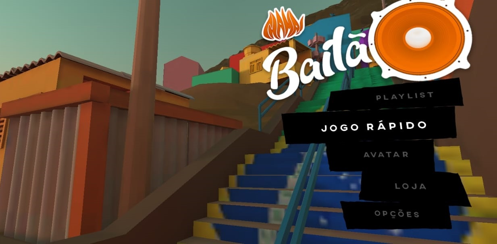

CHAMA! Bailão

'Chama!' is a mobile rhythm game series about brazilian music styles. The first title 'Bailão' is about funk and bregafunk, two of the most listened styles currently in Brazil.. The original concept was developed at the 2019 edition of Game Jam +, getting to the finals via popular vote, and ultimately winning four prizes: Best Direction, Best Audio, 2nd Best Pitch and 3rd Best Game
The original prototype was developed in 3 months approximately, and I had many roles on the project, among which were having created the original concept and design for the game, logo design, character modelling, rigging, animation, technical art, visual dev, as well as a more managerial role, coordinating two other teammates: An environment/UI artist and a programmer.
The original submission, containing a playable prototype/PoC version of the game can be seen here, and if you can understand portuguese, you can also take a look at the original Pitch Deck.